Coming
Slot car timing and race control for the garage track and the club hall. Club testing runs from mid-December 2026.
Precision Timing. Intelligent Control.
Keep me postedBy clicking “Keep me posted” your email will only be used to notify you of APEX Race Control product launches and related updates. We will not sell or share it.
Every lap is corrected against the computer’s accurate clock. A typical Arduino lap counter can drift 30 ms on a 6-second lap. APEX brings that down to 0.01 ms per lap with any supported counter, and 0.005 ms with the APEX lap counter (hardware interrupt timestamps). Trackmate and Race Coordinator hardware get the same correction.
APEX learns the track. Partial laps are calculated from the timing data so positions stay fair even when a car is mid-lap when the heat ends or a track call happens. Packs are timed exactly — cars crossing together are timed as precisely as a single car, even with bouncing contacts.
Every lap is saved the moment it happens. A power cut or restart loses nothing. The lap counter times every lap itself and each lap is written immediately.

Heat clock, running order with lap corrections, big Track call, race progress, live preview — everything to run the night from one screen.
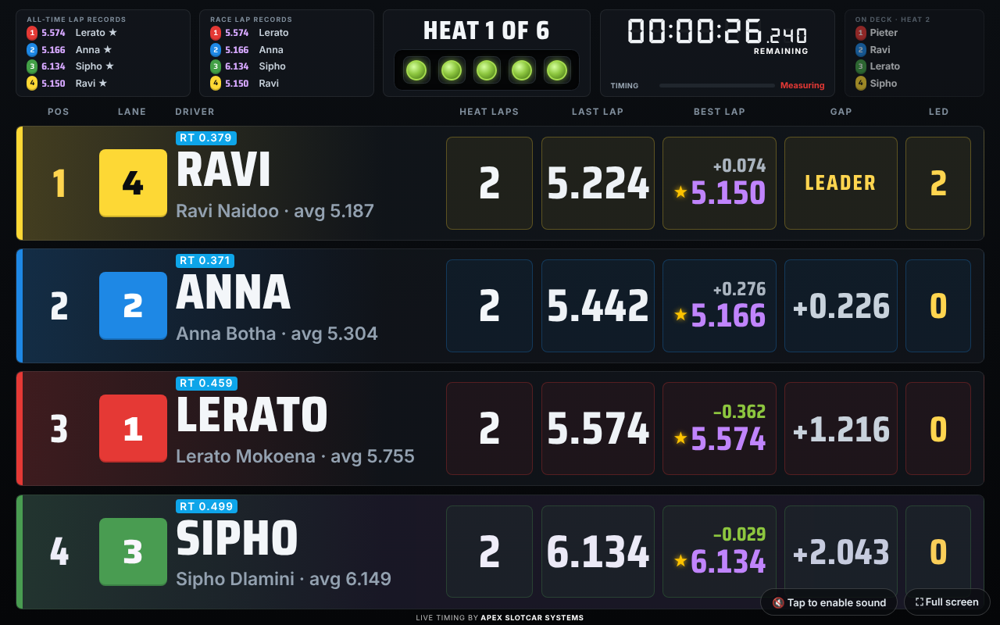
The tower drivers and spectators see. Live order, laps, last and best, gaps, on-deck and lap records.
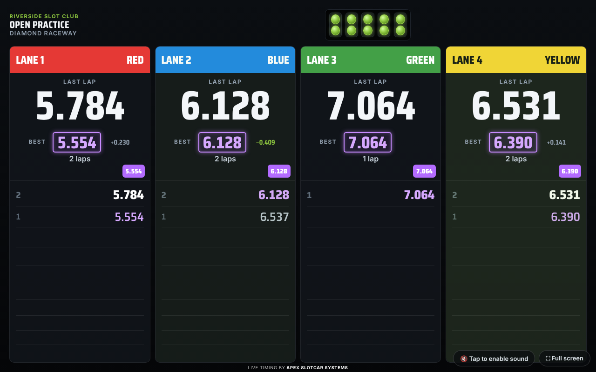
Each lane’s last lap, best lap and lap list on the big screen — club TV or any browser.
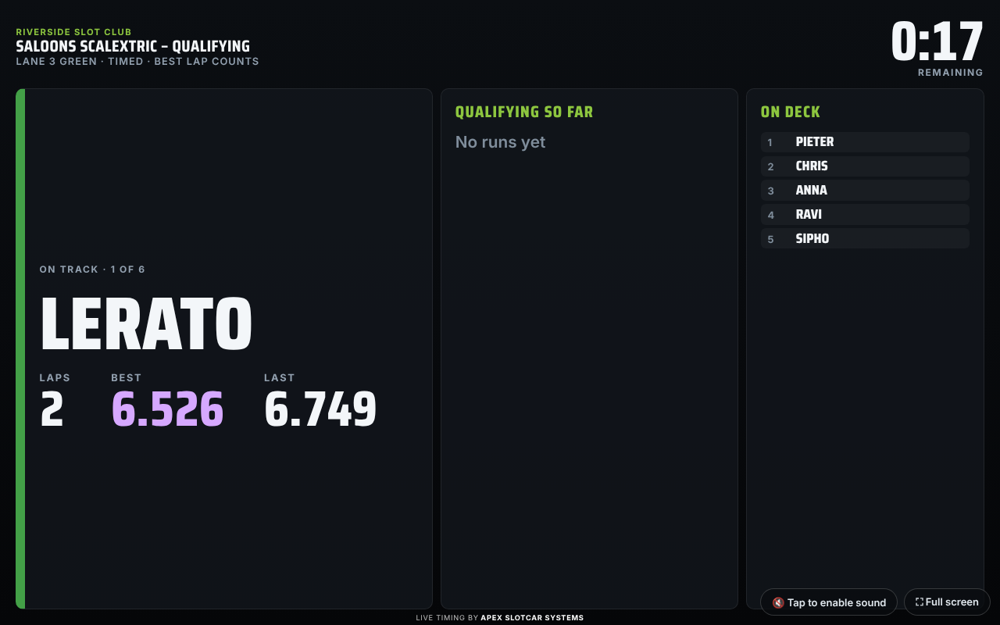
Single-car or multi-car qualifying with best lap counting and an on-deck list.
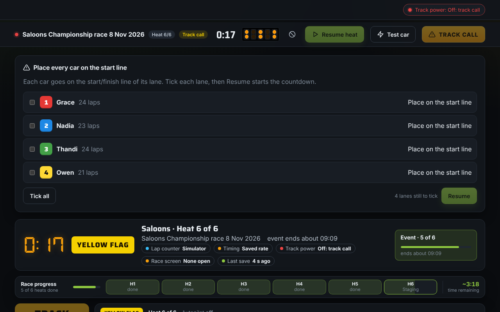
After a track call, place every car, tick each lane, then resume when the field is ready.
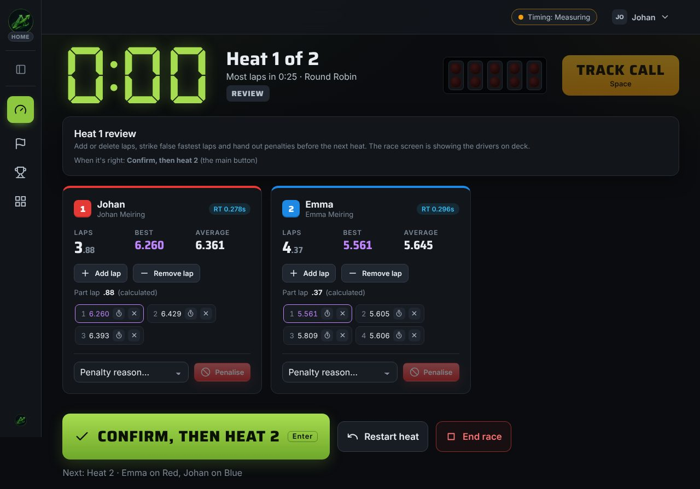
Add or delete laps, strike false fastest laps, hand out penalties, then confirm.
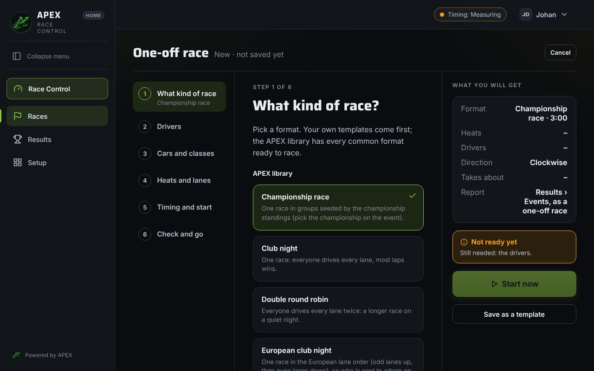
Short steps with selection tiles. Next stays off until the step is complete.
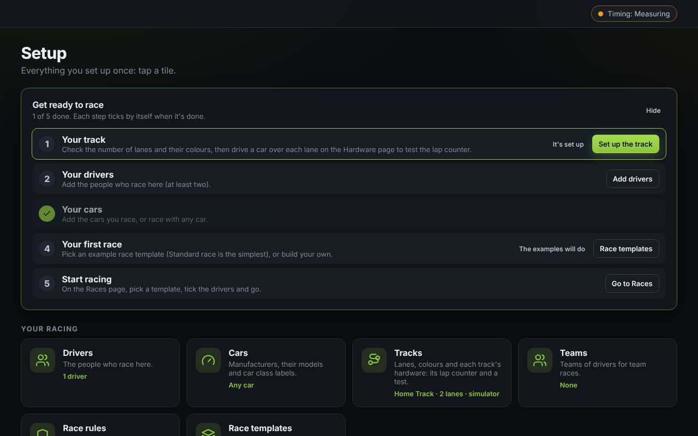
Track, drivers, cars, first template — then start racing. Each step ticks itself when done.
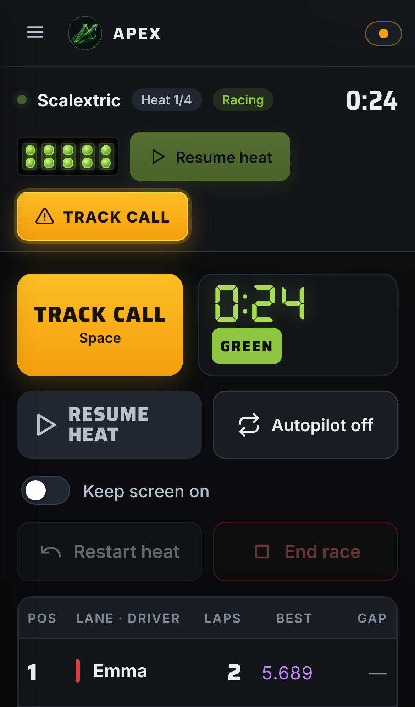
Track call, resume, restart, end race, keep screen on — remote or full control surface.
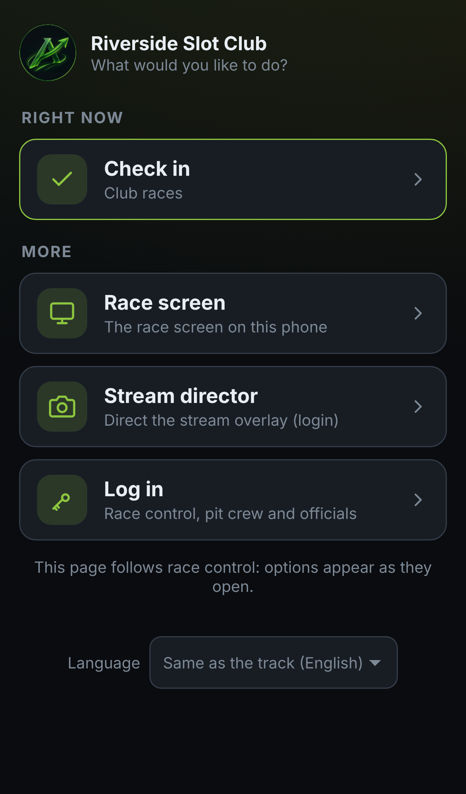
Drivers scan the race screen QR. Officials open race screen, stream director or race control.
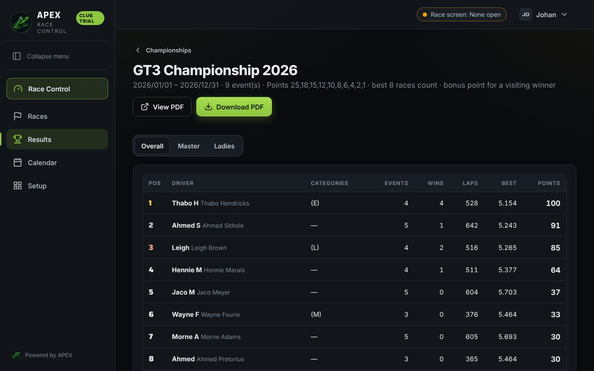
Seasons with dropped rounds and seeding. Clear standings and per-driver reports.
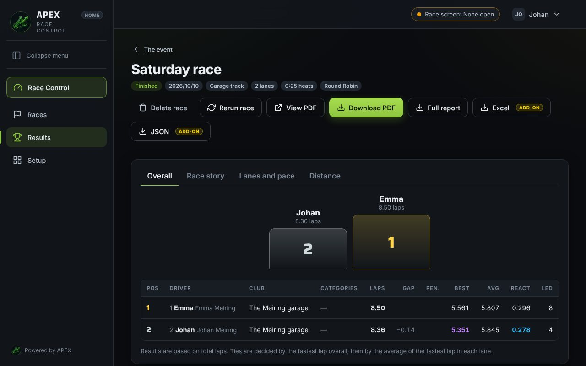
Scan the QR. Personal report with graphs and class rules — no app, no login.
Breaks between heats run themselves so the organiser can race too. Your click always wins. Handles late joins and early leavers.
Overlays and screens advance with the race; take control any time. Full Stream director detail lives in Broadcast Studio.
During a Track call, power one lane to try a car without disrupting the order or results.
Every setup is a few short steps with selection tiles. Next stays off until the step is complete, and nothing starts blank. Quick race, championship, endurance, event — racing in minutes, not fighting menus.
Scan a QR code. Your personal report with graphs and class rules. No app, no login.
Drivers scan the race screen QR, pick name, class and car. Smooth club nights with late arrivals.
The same live race screen on a TV, laptop, tablet or phone.
Clear announcements of who’s next and key race events — never a driver’s name. Offline, male or female voice.
Rotations put every driver on every lane. Late drivers and early leavers are handled; heats already run never change.
Works with the APEX lap counter, Trackmate, or an Arduino running Race Coordinator’s program. Same clock correction on all of them.
Moving from Race Coordinator or TrackMate? Import your database or exports — drivers, races, results, rotations and the rest.
Questions or club enquiries? Email info@apexslotcarsystems.co.za.